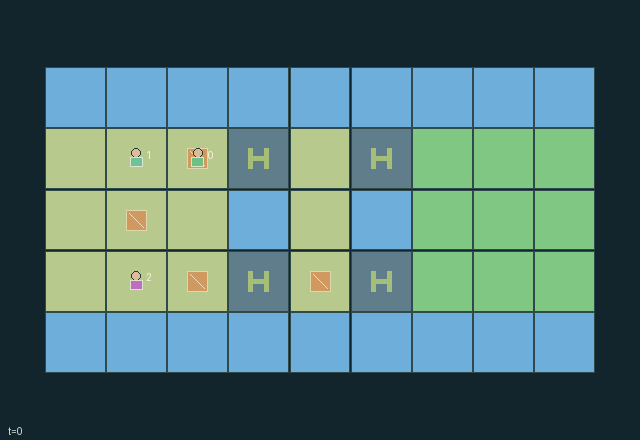

GI116 · Bridge builders with unequal tool kits

Bring all three crew members to x>=6 across two channels using four reusable parts and temporary spans.
Identity and original contract
3 independently actionable roles; 12 discrete commands per role; 102 native observation columns per role; original horizon 144 steps. Declared per-step reward range: -2.0 to 12.0. Observation regime: fully_observable.
Source SHA-256: 77e414f83595f8e956845a9273d39bf6e347e9f43075f77e97ffe07f8d39d772
The objective, rewards, population, map and horizon remain original. A preview is not a success claim.
Objective and gameplay
Bring all three crew members to x>=6 across two channels using four reusable parts and temporary spans.
Mass equals one plus carried part count. Unbraced spans carry mass one; braced spans carry mass two. The builder consumes a held part to install a span, the stabilizer sustains it, and the porter cannot cross while holding two parts. Consent-based handoffs and bridge recovery move exactly existing material identities.
- Four identified parts may lie on land, be carried or be installed. No part is created or destroyed.
- The stabilizer carries zero parts, builder one and porter two. Body mass is one plus the current load.
- Installed unbraced spans support total mass one; a live brace raises it to two and prevents lifetime decay.
- Only the builder assembles or retrieves spans. Only the stabilizer renews support. Part handoff needs give and receive in the same step.
- Land permits co-location; simultaneous bridge entries are resolved in rotating order against actual total mass.
- Unsupported spans expire. Expiry or overload returns their material and any falling crew and held parts to the socket western bank.
- All three crew must be on the far bank together. First arrivals pay once; collapses can cause delays and negative reward.
- The dynamic span tiles and part locations derive from real state. This package contains no executed crossing proof.
Ending: All crew physically occupy far-bank ground simultaneously; otherwise truncate at tick 144. A previously arrived crew member may return to help, and arrival reward is not repeated.
What this game explores
Commitment, exchange & governance: Promises consume time, liquidity, access or material. Separate an announced agreement from a binding commitment and from its eventual delivery; log cancellation and expiry too.
Complementary production & service: A useful outcome requires ordered stages, scarce equipment or another role's capability. Measure real completed products and resource circulation rather than counting intermediate actions as success.
Joint transport & shared access: Positions, load geometry, occupancy and persistent access constrain whose action can succeed next. Distinguish physical handoff, shared controls and simultaneous force from a cosmetic cooperation label.
Team opposition & interception: Cooperation within a team can coexist with opposition between teams. Preserve team membership, capture and possession rules, and report each team's outcomes instead of assuming a single shared return.
Survival, protection & rescue: Protection and repair alter another role's future feasible actions. Record losses, exposure, rescue and infrastructure as well as delivery; survival is determined by the actual kernel.
These are questions supported by rule structure, not observed learning effects.
Play it: operating walkthrough
crucibles play --game gi116Keep Python running and open its printed address. Select this game, set a seed and press Create session. The game itself is always English.
Assign a role range to Host with Assign / take over, or Assign all roles. Invite a second participant with Create player invitation, then assign a disjoint subset. Every original role is available.
For every owned role choose a legal command and press Queue. Arrow keys / WASD queue a declared directional action for the current role camera when available. Space or Advance one joint step advances everyone together. Non-directional games use the selectors.
Unqueued roles use the labelled untrained uniform-legal policy. Take over or release roles before the next step without resetting. Full-state debug is privileged and permanently logged; role cameras preserve permissions. Close the session to retain logs. Server restart does not restore sessions.
Complete command reference
IDs and English labels exactly match the manifest. Availability depends on role, resources, location and phase. An available action can still have no productive effect.
0·Wait
1·Attempt north
2·Attempt east
3·Attempt south
4·Attempt west
5·Pick up a nearby ground part on land if capacity allows
6·Builder assembles a held part at a nearby empty socket
7·Stabilizer braces the first nearby socket
8·Offer one held part to an adjacent consenting receiver
9·Consent to receive one offered part
10·Builder recovers an adjacent unoccupied span if hand is free
11·Drop one held part onto current land cell
Roles and capability identifiers
These original role names describe capabilities, not interchangeable skins. Check each owned role's legal selector before planning handoffs.
agent_0·Stabilizer: braces nearby supports and has no carrying capacity
agent_1·Builder: carries one part, assembles or recovers spans
agent_2·Porter: carries two parts and hands them to the builder
Information and observation permissions
Map, roles, all part locations and owners, bridge support/lifetime/capacity and current crew locations are public. The acting role receives its identity one-hot. There are no private fields.
The GIF is full-state debug and may reveal hidden entities or private state. Train on obs[agent], not the picture, state tree or another role's private row. Field slices and visibility are in the original manifest.
Reinforcement-learning integration
import jax
from crucibles_jaxmarl import make
env = make("gi116")
key = jax.random.PRNGKey(0)
key, rk, ak, sk = jax.random.split(key, 4)
obs, state = jax.jit(env.reset)(rk)
actions = env.sample_actions(ak, state)
obs, state, rewards, dones, info = jax.jit(env.step_env)(sk, state, actions)
done = dones["__all__"]Observations are float32 vectors of width 102; actions are scalar int32; masks have 12 entries. Supply all 3 roles each transition. Masked sampling is an engineering reference, not a trained learner.
step_env retains terminal data without reset. step performs outer autoreset and keeps terminal data in info["raw_state"] and info["raw_observation"]. Use dones["__all__"] for episode boundaries; separate completion, failure and time limit in analysis.
JIT or vmap equal identities and shapes. Split independent reset, policy and transition keys. Group different shapes explicitly; do not shrink the population or horizon. Host rendering stays outside training.
Training questions and fair evaluation
Define valid completion from the objective before fitting. Preserve original rewards and also report real deliveries/services, losses, resource state, unresolved episodes and per-role returns. Animation is not a reward signal.
Promises consume time, liquidity, access or material. Separate an announced agreement from a binding commitment and from its eventual delivery; log cancellation and expiry too.
A useful outcome requires ordered stages, scarce equipment or another role's capability. Measure real completed products and resource circulation rather than counting intermediate actions as success.
Positions, load geometry, occupancy and persistent access constrain whose action can succeed next. Distinguish physical handoff, shared controls and simultaneous force from a cosmetic cooperation label.
Cooperation within a team can coexist with opposition between teams. Preserve team membership, capture and possession rules, and report each team's outcomes instead of assuming a single shared return.
Protection and repair alter another role's future feasible actions. Record losses, exposure, rescue and infrastructure as well as delivery; survival is determined by the actual kernel.
Compare memory, communication or centralized critics under matched actor information. Declare critic access; keep actor inputs role-filtered. Match partner/opponent distributions, masks, compute and checkpoint selection. Final tests never enter fitting or selection.
Independent training runs or source-pairing blocks are inferential units; episodes from one policy are not independent training replications. Save hashes, keys, versions, device, time and cost. Negative, zero, failed and indeterminate outcomes are valid. No trained checkpoint or target score is supplied.
Classification and evidence
Overlapping editorial labels are reading aids, not proof of novelty, difficulty, strategic equivalence or learning effects.
- Commitment, exchange & governance
- Evidence
manifest.actions.8: Offer one held part to an adjacent consenting receiver
- Evidence
manifest.actions.9: Consent to receive one offered part
- Evidence
scene.rules.4: Land permits co-location; simultaneous bridge entries are resolved in rotating order against actual total mass.
- Complementary production & service
- Evidence
manifest.actions.6: Builder assembles a held part at a nearby empty socket
- Evidence
scene.rules.3: Only the builder assembles or retrieves spans. Only the stabilizer renews support. Part handoff needs give and receive in the same step.
- Evidence
scene.rules.4: Land permits co-location; simultaneous bridge entries are resolved in rotating order against actual total mass.
- Joint transport & shared access
- Evidence
scene.rules.0: Four identified parts may lie on land, be carried or be installed. No part is created or destroyed.
- Evidence
scene.rules.4: Land permits co-location; simultaneous bridge entries are resolved in rotating order against actual total mass.
- Team opposition & interception
- Evidence
scene.rules.6: All three crew must be on the far bank together. First arrivals pay once; collapses can cause delays and negative reward.
- Survival, protection & rescue
- Evidence
scene.rules.6: All three crew must be on the far bank together. First arrivals pay once; collapses can cause delays and negative reward.
Source, receipts and preview limits
The world-only English GIF replays saved untrained legal actions through the original kernel. At most 25 actual endpoints include initial and terminal state; no invented interpolation. It is full-state debug, not the role observation.
Original source, observation slices, manifest and mechanism
Native receipt · Presentation receipt
Engineering passes do not establish learning. Nonzero floating differences remain recorded and undetermined; no new tolerance was introduced. Human scores remain unverified.